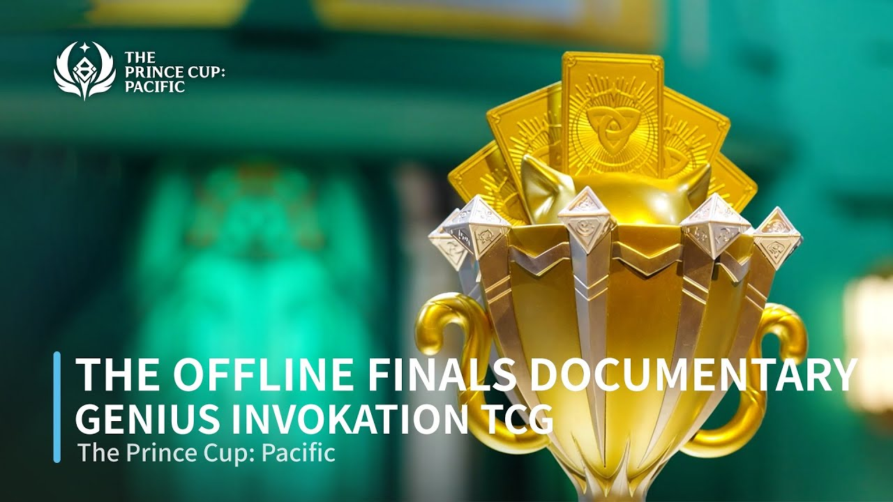
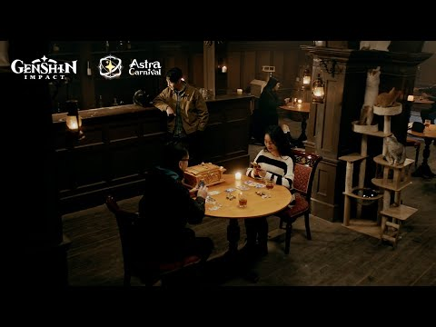
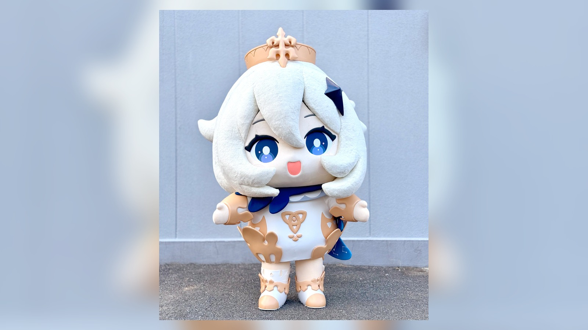
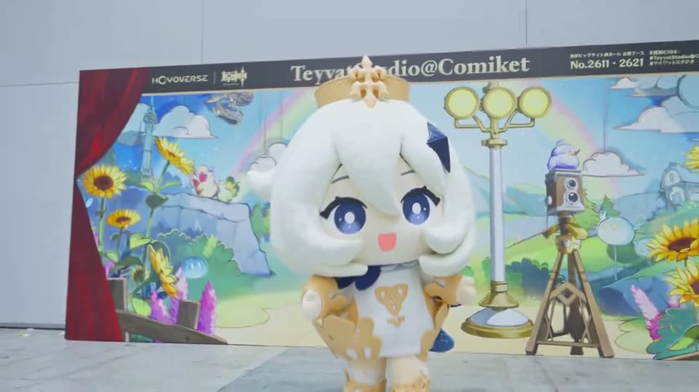
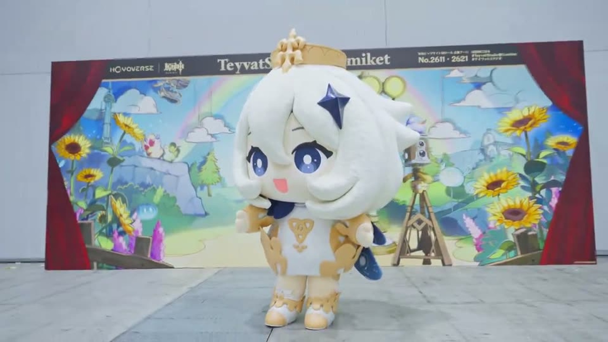
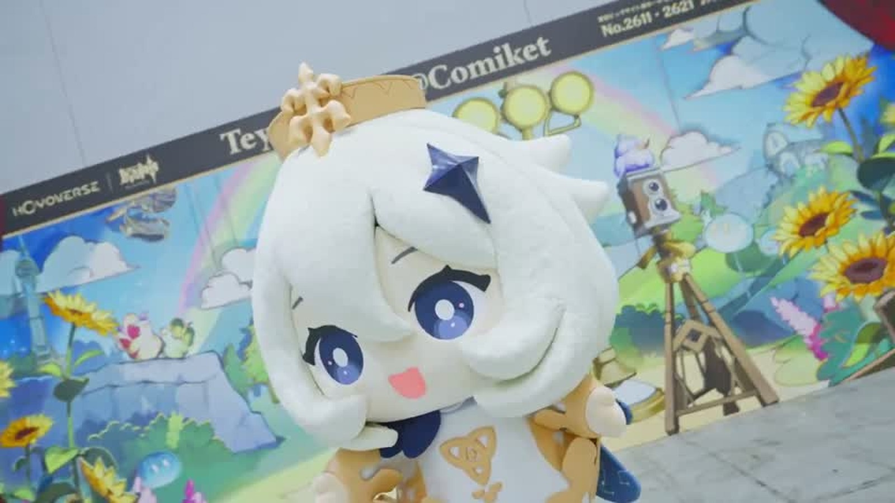

真人实拍 TVC
真人实拍 TVC
原神 4.1宣传短片 / 三周年TVC「所感所想，撼动于心」
从三周年节点切入，把版本情绪、角色记忆和真人影像语言组织成玩家可感知的品牌内容。
公开作品集覆盖TVC、UGC/PUGC、PGC、新技术应用、电视/综艺节目、影视作品、学生时期作品、网易电竞、AI工具项目与其他商业作品；作品仅选取可公开访问的代表内容，未覆盖完整项目经历。


 真人实拍 TVC
真人实拍 TVC
从三周年节点切入，把版本情绪、角色记忆和真人影像语言组织成玩家可感知的品牌内容。
新年短片 / Shorts 系列



持续探索 AR、XR、实时视觉、动画×实拍与线上×线下融合，并把技术选择落实到赛事、线上音乐会与品牌联动内容中。
日本本土明星TVC
以日本本土演员和课堂设定重新包装版本信息，把复杂设定转译为大众也能快速理解的电视广告。
实拍动画结合PV
把餐厅探索、页面玩法、线下体验和角色表达整合为完整用户体验，是IP进入本地生活场景的代表案例。
Tabelog曝光1.5亿 / SNS曝光3,159万 / PV播放1,227万 / 兑换率78%
TikTok原生竖屏短剧
以美食为媒介描写IP和玩家间的羁绊，把真人实拍影视化转译为适配短视频平台的连续短剧。
单集平均约60万播放 / 互动率、完播率远高于目标
旗舰MV
围绕角色、音乐和PUGC动画团队协作，把声优演唱、角色情绪和创作者表达整合成旗舰音乐内容。
全平台自然播放1,300万+ / 自然话题投稿16,950 / Spotify点击率高于品类均值+11%
 地上波综艺特番
地上波综艺特番
让游戏IP进入日本电视台综艺语境，把版本主题、旅行叙事和大众娱乐节目结构连接起来。
 全国地上波特别节目
全国地上波特别节目
把原神IP带入年末地上波节目场景，让游戏内容进入日本大众娱乐渠道。
富士台整体收视率2.0%、推定到达700万
 赛事品牌PV
赛事品牌PV
以决赛节点为核心，把选手、赛事张力和联赛品牌包装成可传播的主视觉影像。
 世界赛开场PV
世界赛开场PV
以队长和战队身份打开叙事，把世界赛开场、选手登场和品牌包装合并成单支主推PV。
 自研工具 / 生成导演工作台
自研工具 / 生成导演工作台
从三周年节点切入，把版本情绪、角色记忆和真人影像语言组织成玩家可感知的品牌内容。

以TVC节奏放大纳塔版本的速度、热度与视觉冲击，形成大型版本传播中的主视觉记忆。
以日本本土演员和课堂设定重新包装版本信息，把复杂设定转译为大众也能快速理解的电视广告。

围绕新IP公测节点制作TVCM，在日本市场建立第一波大众认知。

围绕玛薇卡角色气质做真人广告表达，把角色情绪转化为更具冲击力的观看记忆。
把餐厅探索、页面玩法、线下体验和角色表达整合为完整用户体验，是IP进入本地生活场景的代表案例。
以美食为媒介描写IP和玩家间的羁绊，把真人实拍影视化转译为适配短视频平台的连续短剧。

将IP角色语气和零食消费场景结合，形成轻量、高识别度的日本本地品牌触点。

把城市地标与IP体验连接起来，让线下联动从活动信息变成可传播的目的地叙事。

通过制作人对谈连接两个作品社群，让联动从话题曝光延伸到创作者语境和玩家理解。


用动画形式让角色进入餐饮联动场景，提升合作内容的可看性与记忆点。

把温泉目的地与IP体验结合，让区域旅行场景拥有可识别的角色触点。


把线下校园活动的参与感沉淀为可传播的回顾影像，延展IP与年轻用户的情感连接。
把纳塔版本视觉放进现实空间，让角色与城市环境形成可拍、可分享的互动体验。

以 XR 连接音乐演出、游戏世界观与线上观看，让 IP 的情感资产延伸为更具沉浸感的音乐会叙事。

以角色预告片承载版本人物认知，把叙事、视觉和角色记忆点浓缩进短时长内容。




围绕角色、音乐和PUGC动画团队协作，把声优演唱、角色情绪和创作者表达整合成旗舰音乐内容。

把爵士现场、角色内容与线上节目结构结合，形成跨IP音乐表达和社群观看的共同场景。

以电影预告片语法包装游戏内容，把角色、世界观和娱乐类型感压缩成高密度观看记忆。
让游戏IP进入日本电视台综艺语境，把版本主题、旅行叙事和大众娱乐节目结构连接起来。

用悬疑、逃脱游戏和声优实拍节目结构承接IP世界观，让用户参与从观看转向解谜与现场体验。

用观察类节目结构承接玩家文化，把版本传播与用户画像放到更大众化的观看语境中。
把原神IP带入年末地上波节目场景，让游戏内容进入日本大众娱乐渠道。

在日本完成的导演作品，入围山形国际电影节；该届入选导演中，Eason 是唯一的中国背景导演。

电影《十四天》终章片段，以角色、情境和节奏推进小体量故事。

以摄影参与跨地域儿童成长议题的纪录片拍摄，在真实环境中捕捉家庭、教育与成长现场。

以摄影参与人物纪录片系列，跟随李小牧的个人经历、公共身份与城市关系展开长线记录。


纪录片作品，围绕人物处境与日常细节展开观察。
以决赛节点为核心，把选手、赛事张力和联赛品牌包装成可传播的主视觉影像。
以队长和战队身份打开叙事，把世界赛开场、选手登场和品牌包装合并成单支主推PV。

围绕联赛品牌、舞台包装与选手登场建立连续视觉系统，将多个赛季节点串联为统一的赛事内容资产。

围绕选手、战队和赛事情绪建立叙事，让电竞内容从赛果传播延展到人物与社群关系。

从联赛直播、现场节目到艺人开幕式，推动日本电竞内容从比赛转播延伸到节目化表达。

把联赛节点、音乐内容和粉丝向叙事结合，补足电竞内容的情绪记忆与社群传播。
把视觉参考、音乐方向、分镜推演、素材实验和自动化脚本沉淀为可复用的生成导演工作台，连接创作判断与AI工具链。


商业游戏PV与广告内容，收录可公开访问的项目视频。

将 Shinjuku Gyoen 与 KaguraSki 两支旅行影像合并为系列，串联轻量旅行内容与运动场景下的个人影像风格。

学生时期武侠短片摄影作品，围绕动作调度、古装氛围和类型片影像完成现场创作。

本科毕业作品，以城市经验和人物关系为核心展开叙事。获首届“中山杯”微电影大赛最佳新人影片奖。

学生时期短片摄影作品，聚焦早期影像现场中的构图、运动与光线调度。

学生时期短片现场作品，担任摄影、灯光与声音设计，以生活场景和人物情绪组织短片节奏。

大三导演课作业。获 2014 华人草根创意微电影金善奖金奖，并获最佳导演、最佳摄影、最佳剪辑、最佳音效、最佳美术设计等技术类奖项提名。

大二电影摄影课与剪辑课联合作业。获首届佳能全国高校影像作品大赛铜奖，入围第 21 届北京大学生电影节原创作品大赛。